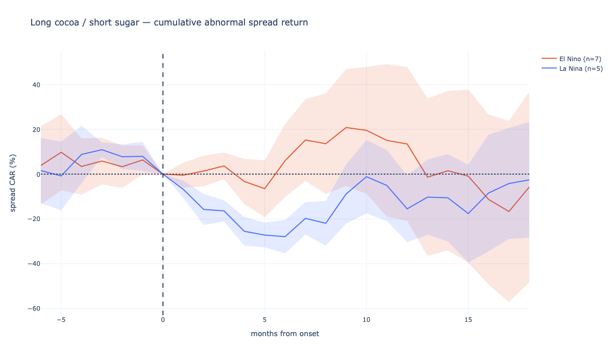
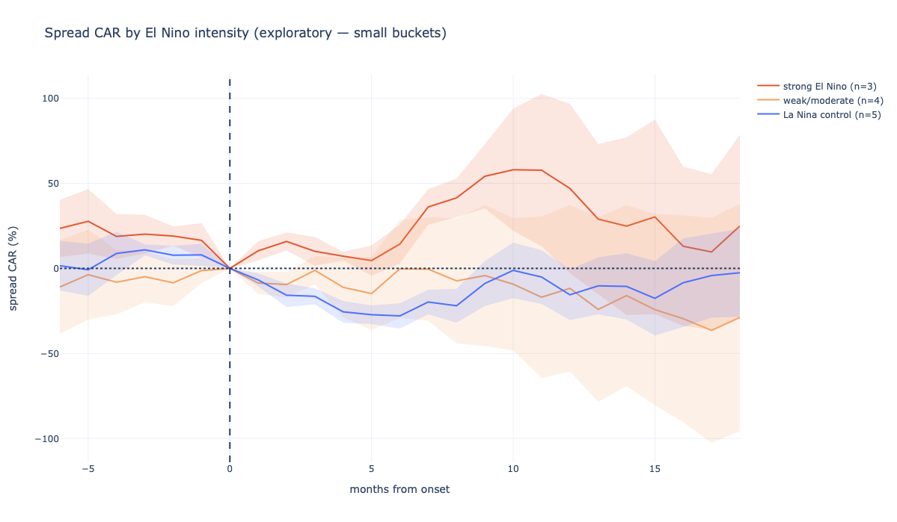
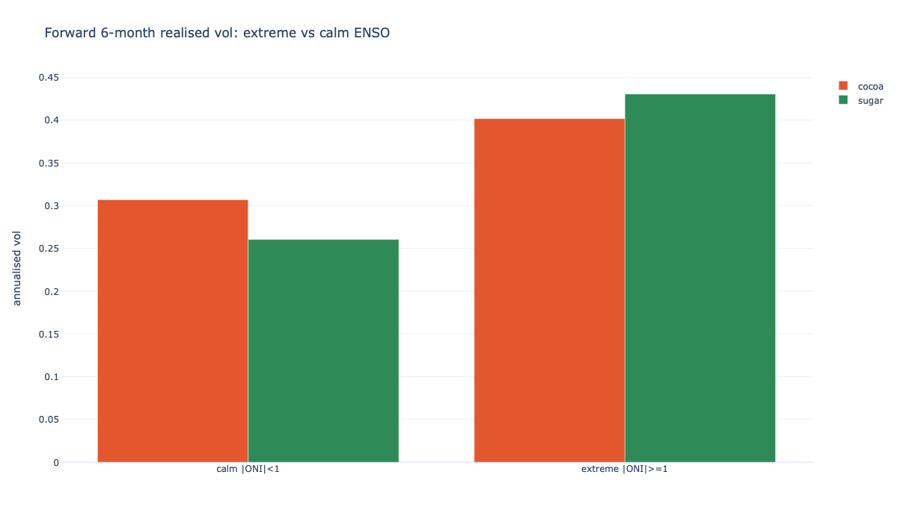
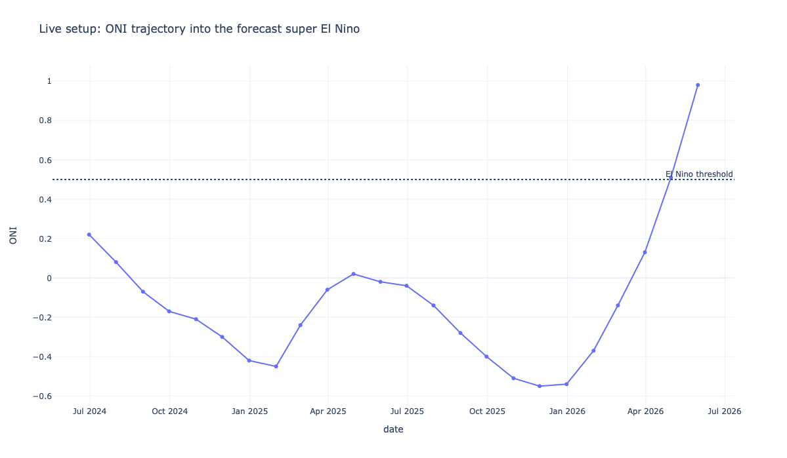

Everyone says El Niño lifts coffee, cocoa and sugar prices. Tested properly, the popular directional trade collapses — and the real, statistically significant signal turns out to be somewhere else entirely.
There's a well-worn market story: El Niño — a warming of the equatorial Pacific — disrupts weather across the tropics, damages harvests, and pushes up soft-commodity prices. The index that measures it, the ONI (Oceanic Niño Index), is just how many degrees above or below normal that patch of ocean is. Above +0.5 °C is El Niño; below −0.5 °C is its cool twin, La Niña.
The commodities most exposed grow in narrow, weather-sensitive belts: cocoa in West Africa, sugar in Brazil and India, coffee in Brazil and Vietnam. So the story is plausible. But "plausible" and "tradeable" are different things — and popular market stories are exactly the ones worth testing rather than repeating. This project asks a simple question honestly: if you had traded on El Niño, would it actually have worked?
The climate signal — the monthly ONI back to 1950, published by NOAA's Climate Prediction Center. The prices — front-month cocoa, sugar and coffee futures, plus the Brazilian real as a control, from public market data. Everything is reproducible: anyone can rerun the code and get the same numbers, which is the point.
Each step exists to remove a way we could have fooled ourselves. Read together, they're the difference between a pretty chart and a result you can defend.
For each event we take a market's move minus its own normal drift from the year before.
Why: softs drifted upward for 25 years, so everything "rises after an event." Removing the drift shows what the event itself did.
The headline object is a spread: long cocoa, short sugar, sized dollar-for-dollar.
Why: the weather signal points opposite ways in the two crops, and pairing them cancels whatever moves all commodities together — the dollar, broad risk appetite.
Run the identical test around the opposite, cool phase.
Why: if prices move after both phases, it's just seasonality or drift. A real El Niño effect should show up warm and not cool.
Recompute the average leaving out each El Niño in turn (leave-one-out).
Why: with only a handful of events, one dramatic year could fake the whole thing. If it survives every drop, it's a pattern — not an anecdote.
Newey–West (HAC) standard errors, sized to the overlapping windows.
Why: overlapping events make naive statistics look far more certain than they are. This widens the bars to tell the truth about confidence.
Separate the record-breaking El Niños from the marginal ones.
Why: a weak +0.6 °C blip and a +2.5 °C monster aren't the same event. Averaging them together hides any effect that only strong events produce.
Ask whether ENSO extremity predicts how much prices move — either way.
Why: in commodities, the size of the coming move is far more predictable than its direction. This is where the real signal turned out to live.
The naive version fails. Conditioning on strength is tempting but too thin. Then the signal shows up where you'd least expect it — in volatility.
Across seven El Niños, long-cocoa/short-sugar was positive in only four at the nine-month mark — barely a coin flip — and the average was propped up almost entirely by two outlier years, 2006 and 2023. The regression agrees: the coefficient points the predicted way but comes nowhere near significance.
| Event | Spread CAR @ +9m |
|---|---|
| 2002 | −74.8% |
| 2004 | −20.6% |
| 2006 | +115.4% |
| 2009 | +49.6% |
| 2014 | +23.9% |
| 2018 | −36.9% |
| 2023 | +88.9% |
| coef | t | p | |
|---|---|---|---|
| cocoa | +0.013 | +1.27 | 0.20 |
| sugar | −0.006 | −0.71 | 0.48 |
| spread | +0.018 | +1.28 | 0.20 |

Split the events by strength and the picture sharpens: the three strong El Niños show a spread response building to roughly +55% around months 9–11, while the weak events and the cool control sit flat. It's mechanism-consistent — only a strong event stresses West African cocoa weather enough to matter, and the effect lands at the harvest-disruption horizon you'd predict in advance. But with n = 3 and error bands that overlap the control, this is a hypothesis, not a proven edge.

Flip the question from which way to how much. When the Pacific is in an extreme state — a high absolute ONI, warm or cool — sugar's realised volatility over the next six months is reliably higher. The effect is statistically significant and economically large, where the directional tests never cleared the bar. Cocoa and the spread don't make it; sugar, which sits at the crossroads of Brazilian cane, the Indian monsoon and Thai supply, does — exactly the market you'd expect to be most weather-sensitive.
| coef | t | p | R² | |
|---|---|---|---|---|
| cocoa | +0.051 | +1.14 | 0.25 | 0.03 |
| sugar | +0.100 | +2.72 | 0.006 | 0.14 |
| spread | +0.034 | +0.59 | 0.56 | 0.01 |

As of mid-2026 the ONI has vaulted through +0.5 to roughly +0.98, and NOAA is forecasting a strong-to-super El Niño peaking around December. That is precisely the regime where the one robust result lives.
If the finding is real, the expression isn't "buy sugar." It's buy sugar volatility — optionality or straddles — into a confirmed strong event.
This is the honest ending: not a backtest that claims certainty, but a pre-registered prediction with a clock on it. The next few months are a genuine out-of-sample test of whether the sugar-vol signal holds.

Naming these is the point, not a disclaimer bolted on the end. They're why the conclusion is phrased as a base rate, not a law.